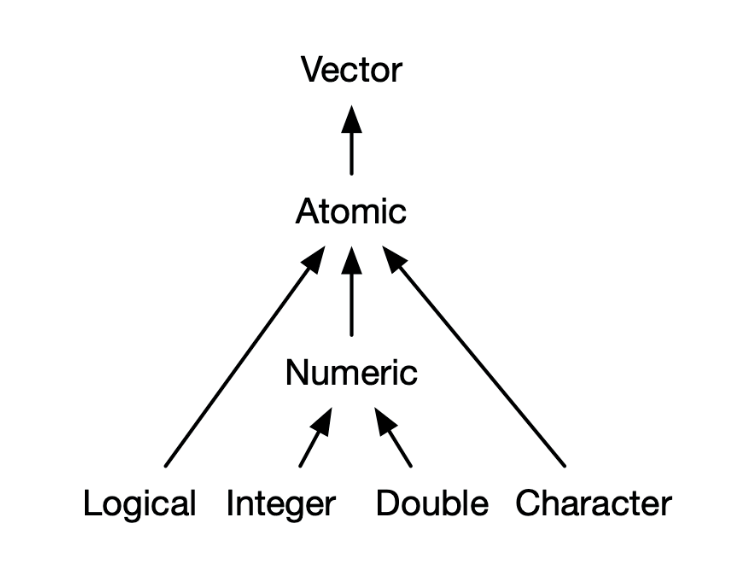

MATH167R: Basic Definitions
Warm-up: Getting to know each other
In groups of two or three, share:
- Introduce yourself
- Discuss what you think the following code does (feel free to try it out):
Overview of today
- Basic definitions: objects, expressions, functions, data types
- R Markdown and file management
Basic definitions
Review
“To understand computations in R, two slogans are helpful: Everything that exists is an object. Everything that happens is a function call.”
(Chambers, 2014)
We saw last class that we can use R to perform basic mathematical operations:
Expressions
We saw last class that we can use R to perform basic mathematical operations:
Definition: an expression is a symbol or a combination of symbols that evaluates to a value.
Objects
Definition: An object is created when R evaluates an expression. The object is accessible only by name.
- An anonymous object gets deleted from the computer memory by a process called garbage collection.
- A special object named
.Last.valuecontains the value of the last evaluated expression (in console only).
Assignment
We saw last class that we can assign names to values:
Definition: Assignment is an operation to bind an object to name, using the symbol <-.
=and<-are not generally equivalent. However, they are equivalent when they are used as assignment operators.
Check your understanding: Assignment
What do you expect the output of the following chunks to be?
Check your understanding: Assignment
What do you expect the output of the following chunks to be?
Objects and data
We can use assignments to save values as named objects and perform math on the objects:
Today we’ll see that R can handle objects that are not numbers:
Atomic vectors
The most basic type of object in R used for storing values is the atomic vector. The four most common types of atomic vectors are:
- logical: ex.
TRUEorFALSE - integer: ex. 1, 2, 3, 4, …
- double: ex. 3.1
- character: ex.
"Hello"
Integers and doubles are both also called numeric vectors.
Atomic vectors
from Advanced R, Hadley Wickham.
Atomic vectors
The typeof function can be used to get the data type of an object.
Coercion
You can explicitly change the type of an object:
When elements of different types are mixed in an atomic vector, R automatically converts all of them to the same type.
Order of precedence, from the highest to the lowest: character, numeric, integer, logical.
Special values
| Value | Usual meaning |
|---|---|
NA |
Missing values |
NaN |
a computed value that is not a number (try 1/0) |
NULL |
an object with no value |
-Inf and Inf |
a computed value that is large (or large and negative) |
Environment
When R evaluates an expression such as x + 1, how does R locate the object associated with the name x?
During an assignment, the binding between an object and its name is stored in an environment.
When R starts, a global environment (sometimes called a workspace) is created; every subsequent assignment that takes place at the command prompt adds objects to this environment.
Environment
We will see later that we can enter local environments within the global environment and define objects that are confined to these local environments.
The ls() command displays object in the current global environment.
To remove objects, we can use the rm() command.
Operators
An operator is a symbol that tells the compiler to perform specific mathematical or logical operations.
Types of operators:
Assignment operators
Arithmetic operators
Logical operators
Relational operators
Arithmetic Operators
| Operator | Operation | Example |
|---|---|---|
+ |
Addition |
|
- |
Subtraction |
|
* |
Multiplication |
|
/ |
Division |
|
Arithmetic Operators
| Operator | Operation | Example |
|---|---|---|
^ or ** |
Exponentiation |
|
%% |
Modulo |
|
Logical Operators
| Operator | Operation | Example |
|---|---|---|
& |
AND |
|
| |
OR |
|
! |
NOT |
|
Relational Operators
| Operator | Operation | Example |
|---|---|---|
> |
greater than |
|
>= |
greater than or equal to |
|
== |
equal |
|
<= |
less than or equal to |
|
< |
less than |
|
!= |
not equal to |
|
Relational Operators
| Operator | Operation | Example |
|---|---|---|
!= |
not equal to |
|
Check your understanding: Operators
File management
The working directory
The working directory is a folder where files are retrieved from or saved to by default.
The command
getwd()gets the working directory, which usually is:/Users/USERNAMEon AppleC:\Users\USERNAME\Documentson Windows
Files on a computer are grouped into folders, which are organized in a hierarchy.
The absolute pathname of a file describes its location in the hierarchy.
Relative pathnames
The relative pathname of a file specifies its location relative to the working directory.
- The command
setwd()sets the working directory for the current R session.
- On Windows, add
C:to the beginning of the absolute pathname.
Example file structure

Project-based workflow
In this class, I encourage you to organize all your code/assignments/files into a single MATH167R folder.
Once you create this folder, you can create an RStudio Project, which will create a file that tells RStudio that all the code in the folder is associated with a single project.
Any code in the project folder assumes that the working directory is the project root directory. This ensures that the project can be moved around your computer or onto another computer and none of the paths will break.
Example file structure for MATH167R
Naming files
Tips from Jenny Bryan:
- machine readable
- human readable
- plays well with default ordering
Naming files
Bad
newfinal2actualFINALnew.docxmy first lab.Rstuff.R
Good:
01_lab1.Rmdanalysis_functions.R2020-01-08_labWriteup.Rmd
R Markdown
R Markdown
R Markdown files (see examples here)
- Combine code, output, and writing
- Self-contained analyses
- Creates HTML, PDF, slides (like these!), webpages, …
- will be required for assignments
Your first RMarkdown file
Open 01_first-R-lab.Rmd in RStudio. At the top of the file, you should see the following header:
---
title: "Lab 1: Basic Definitions"
author: "YOUR NAME HERE"
date: "2023-08-21"
output: html_document
---This header contains metadata about the document that follows: the name of the file, the author, the date, and what kind of output it will create.
Source Editor

Visual Editor

Code chunks
Code chunks contain R code that is evaluated when you render your R Markdown report. You can insert a code chunk by clicking Insert > Code Chunk or by typing the chunk delimiters ```{r} and ``` .
Chunk output can be customized with optional arguments set in the {} of a chunk header, as we will see in Lab 01.
R Markdown (and directory weirdness)
- R Markdown handles all the tricky file management–just put the file you want to access in the same folder as your .Rmd file
- This can be confusing/frustrating—patience is key!
- Try downloading the sample code
01_lab-test-code.Rfrom [here](../static/01_lab-test-code.R) and putting it in the same folder as your Lab 01 R Markdown report.
R Markdown
Remember the following:
- R Markdown produces fully reproducible reports – each time you render, you run the analyis from the beginning
- Code goes in chunks, while the explanation/narrative goes outside of chunks
- RStudio now provides a visual editor for a familiar / Google docs-like editing experience
Lab 1
In Lab 1, we’ll make sure R and RStudio are properly installed and updated, practice assigning objects, and generate your first R Markdown report (in a properly organized directory).